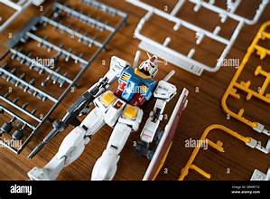

Hobi, Komunitas, dan Manfaat
Merakit model plastik bukan hanya sekadar hobi individual, tetapi juga bagian dari komunitas global. Banyak negara memiliki asosiasi perakit yang rutin mengadakan gathering, workshop, hingga pameran internasional. Ajang seperti Gunpla Builders World Cup (GBWC) menjadi bukti bahwa hobi ini dapat berkembang ke tingkat profesional.
Hobi ini juga menjadi media ekspresi diri. Perakit bebas menampilkan identitas mereka melalui kustomisasi warna, efek weathering, hingga pembuatan diorama yang kompleks. Proses ini tidak hanya meningkatkan kreativitas, tetapi juga melatih ketekunan dan kesabaran.
Manfaat Merakit Model Plastik
- 🧠 Melatih kesabaran dan konsentrasi
- 🛠️ Mengembangkan keterampilan teknis
- 🎨 Menyalurkan kreativitas dan imajinasi
- 😌 Membantu relaksasi dan mengurangi stres
- 🤝 Memperluas relasi melalui komunitas
- 💰 Berpotensi menjadi peluang bisnis
Teknologi modern seperti sistem snap-fit membuat perakitan semakin ramah bagi pemula, sementara model tingkat lanjut tetap memberikan tantangan bagi perakit berpengalaman.
Saat ini, dunia perakit model plastik telah berkembang menjadi fenomena budaya global yang memadukan seni, sejarah, teknologi, dan komunitas digital. Hal ini menjadikan hobi ini semakin relevan dan bernilai di era modern.